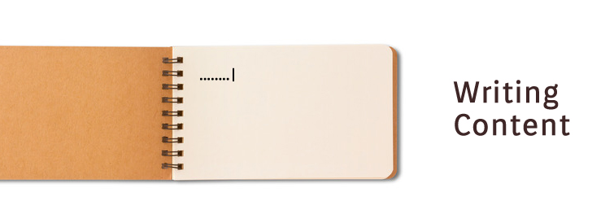

Articles

Writing content for your website
Writing content can be a little intimidating sometimes. Effective communication is key, and it can make or break your business. Your website is your chance to create an identity and convince others of your credibility and your product's worth. No pressure or anything.
There's good news though. It's not as hard as you think! With a few tools under your belt, and some good planning it's a cinch. Keep in mind these five simple steps to get you going:
Research Your CompetitionOne of the best ways to figure out where to get started is to see what other businesses in your industry are saying about themselves. Enter into this phase with fresh eyes, as though you know nothing about the product and this is your first exposure to it. Jot down a quick laundry list of what you thought worked, and what didn't. Take note of the structure of the site, and what was explained where. Use this information not to plagiarize, but to open a window into how you want to portray yourself and in what ways.
Write an OutlineOnce you've done a little research, it's time to begin an outline for your site. By now you have your list of what to do and what not to do based on other websites in your industry, now begin to implement what you've learned so far. Begin to spell out each web page by writing ideas and simple phrases for each. Figure out at this point in the game what you need to describe about you, and your brand and where. Somewhere you need to introduce yourself briefly with power statements (home page), then get into more detail about your company- it's history or why you got into this industry, how you're different, etc (about us). Some other main stays are features of your product, why it's awesome and how it works (products/features). Just decide where those topics are going, that's it for now.
Time to Start WritingYou have an outline in front of you. You know what the plan is, so let's get started. Begin writing small segments from your outline- a few power statements for your home page that essentially and simply describes your product in a nutshell. Don't worry about perfection just yet. Begin by getting what's out of your head on paper, a rough draft. Take frequent breaks. Get up and walk around. Then begin again. As you whittle away at the content for all of the pages, go back and fix spelling and grammar, perhaps rephrase some of the sentences for a stronger read. Check to be sure the length and structure of sentences vary. Then step back.
Ask For HelpNow it's time to ask for help. Someone who excels at writing creatively, or professionally should check your work. Ask them to take notes on the pros and cons, and suggest more effective vocabulary and sentence structure where it applies. Don't be shy and skip this step, it's important. Effective communication requires that a varied audience can follow. While we're talking about help, remember that some designers offer assistance in this area. It may be that they have someone on staff that writes copy for an additional fee, or they may be able to provide you with an outline to work from based on the structure of the website.
Pull the TriggerThis is such an important step. All too often folks get hung up on attempting to make things perfect and delay launching their website as a result. Once you have thoroughly completed these steps, there's nothing else you can do except your best. You've done your research, slowly implemented your plan and written several drafts. Other sets of eyes have surveyed your work and helped tailor your prose. Now it's time to throw caution to the wind, sit back and begin to reap the benefits of a well written website. Go bold or go home.
To conclude, writing copy for your website is an important step in portraying your brand. The final product should give consumers a clear perspective of who you are, what it is you're trying to sell and why, and what makes your product distinctive. Keep these simple steps in mind when you undergo any business writing, and feel free to contact us with any questions you have about writing content for your website.
© 2018 Chris Gillis Design All Rights Reserved.